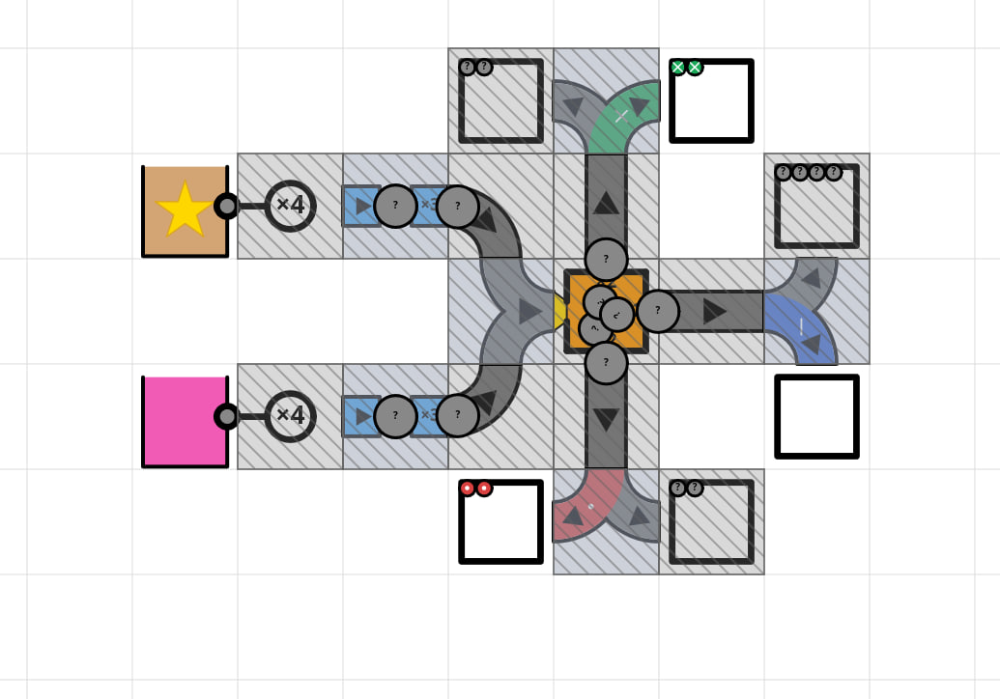
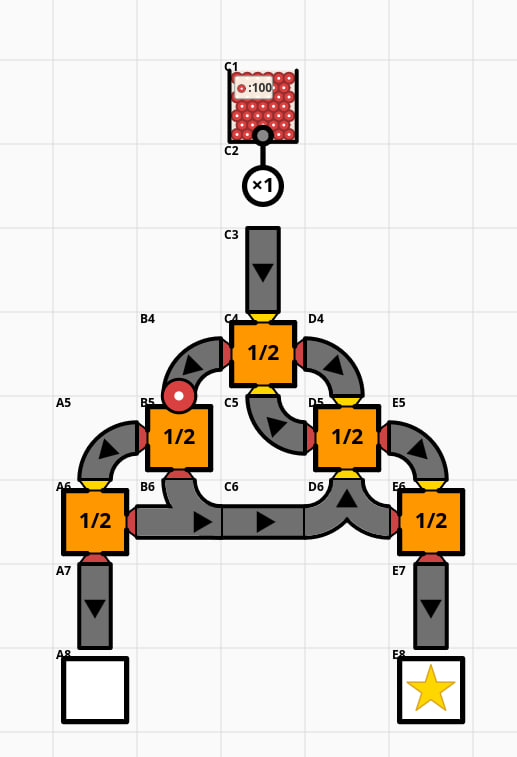
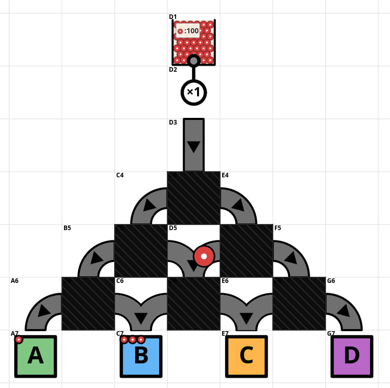

Bayesian Factory
Three small probability games sharing one metaphor: balls flow through a factory of conveyors, mixers, and sorters, and you bet on where they end up. Each leans on a different aspect of Bayesian reasoning.

Updating
Each sack holds an unknown mix of colored balls. Watch what falls out and update your beliefs about what's inside.
PLAY →

Simulation
Every part of the factory is visible. Work out how likely a ball is to land in each output bin — by reasoning, or by writing code.
PLAY →

Inference
Most of the factory is hidden. Watch how the balls come out, infer what's in the hidden parts, and predict where the next ball goes.
PLAY →